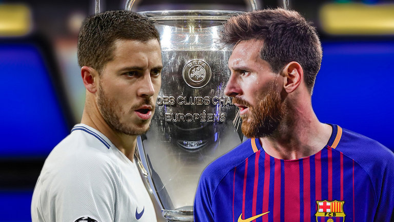
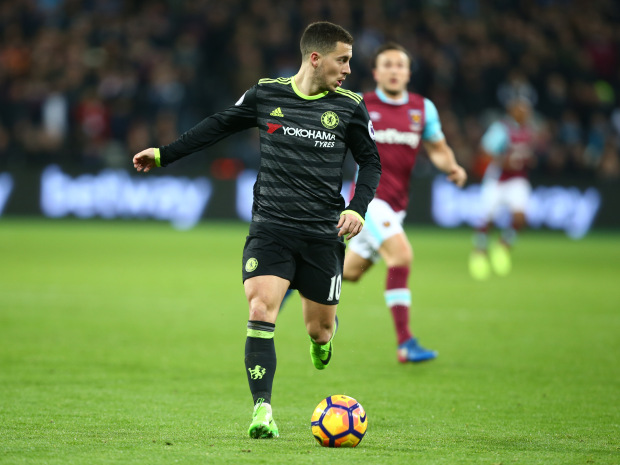

Everyone knows Eden Hazard is pretty near unstoppable when he gets on the ball, but stats show Chelsea forward is even better than Barcelona duo lionel Messi and Neymar in that department.
After some patchy form last season, Hazard is back to his best again this term, and stats from the start of 2014/15 show he’s technically the best dribbler on the planet.  According to Squawka, the 26-year-old has completed more take-ons than any other player in that period, with 388. Neymar is just behind him on 366, with Messi just three off his team-mate with 363 in third place. Surprisingly, Crystal Palace winger Wilfried Zaha is fourth with 311 in that time. Hazard’s superb recent form has seen him linked with Real Madrid, and numbers like this show why. Still, Chelsea fans will be pleased by reports that he’s keen to stay at Stamford Bridge out of loyalty to manager Antonio Conte, and may even sign a new contract soon.